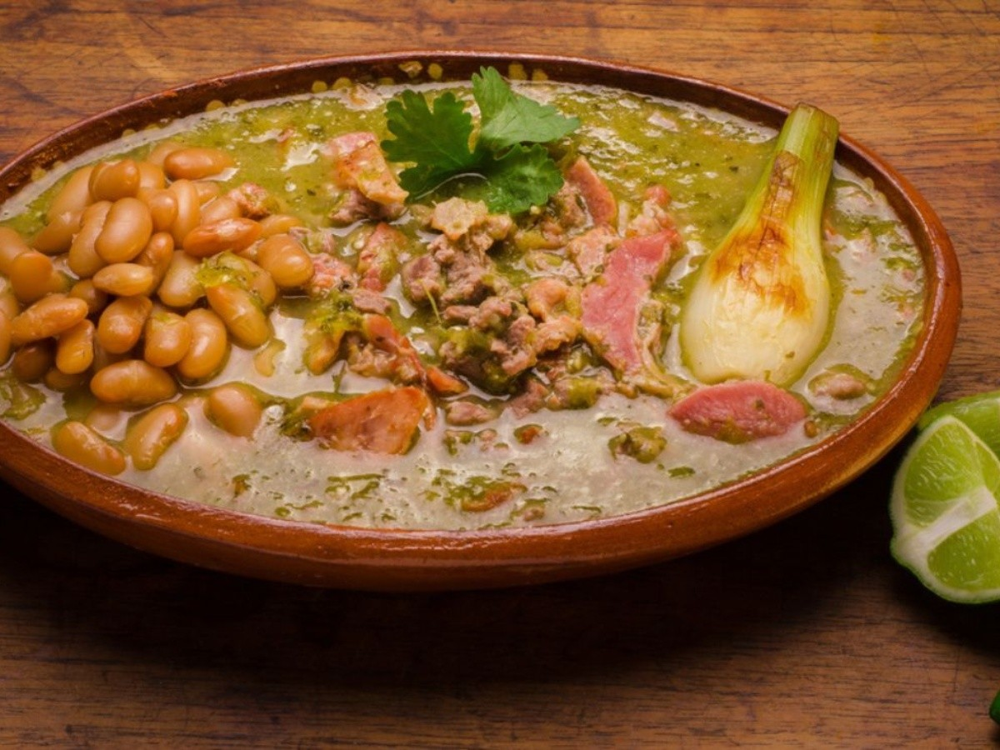

Recetas:
Para esta

Ingredientes (4 raciones)
- 6 rebanadas de tocino
- 1 kilo de bistec de res (diezmillo, que es muy jugoso) en trocitos de 1x1 cm
- 4 tomates verdes chicos
- 2 dientes de ajo
- Al gusto chiles serranos (opcional)
- 1/2 cebolla picada
- 1/2 cebolla en trozo
- 4 cucharadas de cilantro picado
- Al gusto sal
- Al gusto pimienta
- 1 pizca de orégano
- 1 taza de agua
- Al gusto salsa inglesa
- 1 1/2 tazas de frijoles de la olla
- 1 taza de caldo de frijoles (opcional)
Paso a paso
- Pica la cebolla, el cilantro y el tocino.
- Dora el tocino hasta que quede crujiente y suelte toda la grasa. Retira y aparta en un molde.
- En la misma sartén (puedes quitar el exceso de grasa), acitrona un diente de ajo, vierte la carne, agrega salsa inglesa, sal y pimienta. Puedes tapar en cocción lenta para que la carne suelte su jugo.
- Licúa los tomates, chiles, el otro ajo y la cebolla en trozo con agua. Agrega a la carne.
- Al final, agrega los frijoles y su caldo. Deja hervir nuevamente.
- Sirve con cebolla picada, cilantro y tocino crujiente.